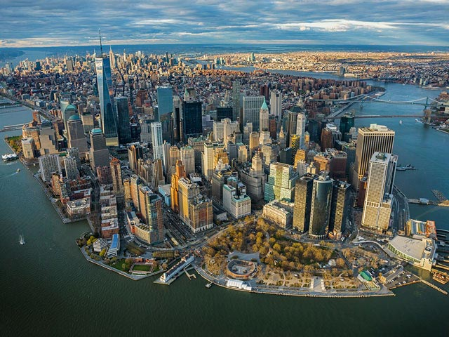
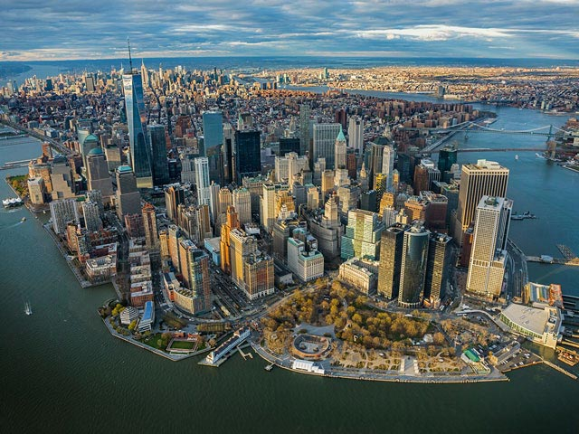

New York
Bienvenue à New York
La folie règne à Manhattan, où taxis, vélo-taxis (pedicabs), piétons et même calèches se bousculent en quête d'un peu de place. Enivrante, frustrante, choquante, presque effrayante dans son intensité et, finalement, exaltante : voilà New York. Une ville qu'il faut visiter au moins une fois dans sa vie !
Les cinq quartiers, ou boroughs, offrent des contrastes incessants et une extraordinaire diversité. Brooklyn draine les écrivains, les artistes, les jeunes couples et les familles à la recherche d'une atmosphère calme et créative sans les loyers exorbitants de Manhattan. Le trépidant Queens est une mosaïque d'ethnies et de nationalités qui vivent ensemble – harmonieusement pour la plupart. Ce vaste quartier, parsemé de grands ensembles, de musées et de galeries avant-gardistes et de coquettes maisons, recèle certains des meilleurs restaurants indiens, coréens, grecs et albanais.
Le Bronx reste le moins apprécié des boroughs new-yorkais, mais même les habitants de Manhattan savent que rien ne vaut Arthur Avenue pour un authentique dîner italien – même Staten Island, avec ses Napolitains de la troisième génération, ne peut rivaliser. Et au milieu de tout cela : Manhattan, ce petit bijou scintillant où tout – absolument tout – peut arriver.
Les lieux à visiter
-
Le port de New York
et la statue de la libertéMi-attraction touristique, mi-port industriel animé, ce secteur à l'extrémité de Lower Manhattan ne manque pas de sites à visiter et d'activités possibles. Situé à la pointe sud de l'île, le port de New York offre une vue splendide sur le vieux front de mer de Brooklyn à l'est, Staten Island au sud, et une partie de la côte du New Jersey à l'ouest. Toutefois, le spectacle le plus extraordinaire reste, bien sûr, la statue de la Liberté, dont la silhouette verte se dresse fièrement au-dessus de l'eau. Qu'on l'admire de loin ou qu'on prenne l'un des ferries qui font continuellement la navette entre le port et son socle rocheux, elle est magnifique. Gardant l'entrée de Lower Manhattan depuis 1886, son regard sévère tourné vers une « Europe arriérée », la « Mère des exilés » est le symbole de la critique des structures sociales rigides du Vieux Monde. « Garde tes fastes d'un autre âge », proclame le célèbre poème gravé sur le socle, « Donne-moi tes pauvres, tes exténués, tes masses innombrables aspirant à vivre libres. » En arrivant, les immigrants accostaient derrière la statue, à Ellis Island, dont le musée reste une étape incontournable pour les touristes. Son émouvante collection comprend des photos de ces immigrants émaciés et apeurés étreignant leurs papiers et leurs maigres possessions.
-
Central Park
Comment croire que ces pelouses verdoyantes, ces forêts mouchetées de lumière, ces fleurs sauvages et ces ruisseaux rafraîchissants puissent exister au cœur d'une ville aussi bruyante et embouteillée ? C'est pourtant le cas. Conçu dans les années 1860 et 1870 par Frederick Law Olmsted et Calvert Vaux, le « parc du peuple » sert de jardin à tous les New-Yorkais. S'étendant de 59th St, à Midtown, jusqu'à Harlem Meer, un lac joliment réaménagé dans 110th St, ces collines onduleuses fourmillent chaque matin d'amateurs de rollers en ligne, de cyclistes, de coureurs, de promeneurs et d'adeptes du yoga. Couples et amis se retrouvent au centre, à Bethesda Terrace, reconnaissable à la célèbre statue Angel of the Waters dressée en son milieu. Les marcheurs et les joggeurs apprécient le réservoir Jacqueline Kennedy Onassis. L'ouest du parc, près de 79th St Transverse Rd, abrite le mémorial à John Lennon, qui aimait flâner dans ce coin désormais baptisé Strawberry Fields et a été abattu par un fan déséquilibré en 1980 alors qu'il rejoignait son appartement, de l'autre côté de la rue. Les centres d'intérêt ne manquent pas à Central Park ; pour en savoir plus, rendez-vous au Dairy Visitor Center (212-794-6564 ; www.centralpark.org).
-
La High Line
Tronçon de l'ancienne voie ferrée aérienne long de 2,5 km, la High Line a été réhabilitée en verdoyant parc public. Elle court le long du flanc ouest du Meatpacking District. Le calme de cette oasis est seulement troublé par le bourdonnement des abeilles qui butinent le pollen des fleurs sauvages s'épanouissant de part et d'autre de la voie. Les rails longent à la verticale une rue anciennement appelée « Death Avenue » (avenue de la Mort, aujourd'hui rebaptisée Tenth Ave). À la grande époque de la marine marchande, on y transportait les marchandises des docks aux dépôts ferroviaires de Midtown – nombreux sont les chevaux, conducteurs ou piétons trop lents à la traverser qui firent les frais de la densité du trafic ferroviaire. En 1934, la ville fit surélever la voie ferrée que les trains empruntèrent jusqu'en 1980. À la même époque, l'industrie délaissa le centre-ville : la voie ferrée fut laissée à l'abandon et la nature reprit ses droits. La High Line était promise à la démolition en 2002, mais un comité de quartier réussit à convaincre les autorités de la réaménager en parc public où pourraient exposer des artistes.
-
Metropolitan Museum of Art
L'un des premiers espaces d'exposition qu'on voit en entrant dans ce tentaculaire musée de Fifth Ave est l'aile Sackler, qui abrite un temple égyptien de 15 av. J.-C. Cette structure en grès de 25 m de haut, sauvée en 1967 de l'immersion sous le barrage d'Assouan, tient largement dans la pièce – ce qui donne une idée du gigantisme du Met ! La collection permanente, composée de 3 millions d'objets, attire 5 millions de visiteurs par an. Prévoyez du temps pour explorer les lieux. Les galeries européennes, en haut de l'escalier en marbre du côté de Fifth Ave, peuvent prendre une journée, de même que les galeries grecques et romaines, plus vastes que jamais, et que la galerie égyptienne récemment agrandie, avec ses momies parfaitement conservées. Ne manquez pas les belles galeries médiévales regorgeant d'émaux byzantins ni l'aile Lehman, qui présente des chefs-d'œuvre de la Renaissance réalisés notamment par Rembrandt et le Greco.
-
Museum of Modern Art
Niché dans une rue de Midtown, le Museum of Modern Art est un véritable trésor. On peut y passer une journée entière, en partant du haut et en descendant, avec une halte dans l'un de ses excellents cafés et restaurants. Le jardin de sculptures, en bas, est l'endroit idéal pour finir la journée. En descendant d'étage en étage, vous remonterez le temps à travers les grands mouvements artistiques du XXe siècle. Les étages 4 et 5 proposent une introduction à l'art moderne, avec des œuvres des artistes majeurs du siècle dernier : Picasso, Matisse, Dali, Mondrian, Pollock, de Kooning, ainsi que quelques originaux de Marcel Duchamp. Un superbe restaurant, le Modern, domine le jardin des sculptures, ponctué d'arbres tordus et d'installations éclectiques. Au 2e étage, un restaurant italien sans prétention comprend un bar à expresso lumineux.
-
Broadway et Times Square
Si on surnomme Times Square le « carrefour du monde », c'est parce qu'il draine les visiteurs qui viennent jeter un œil à l'effervescence perpétuelle régnant au croisement de 42nd St et de Broadway. Après avoir accueilli un marché aux chevaux dans les années 1900, puis une ribambelle de sex-shops, Times Square se caractérise aujourd'hui par la puissance de ses kilowatts, qui alimentent des milliers de lumières et de publicités au néon. Cependant, l'endroit ne se limite pas aux grands magasins, aux restaurants chic et aux panneaux géants. Beaucoup d'enseignes lumineuses sont celles des théâtres qui bordent Broadway. Lorsque les premières enseignes électriques firent leur apparition en 1906, les ampoules colorées grillaient trop vite et on n'utilisait donc que des ampoules blanches. Une telle quantité de théâtres se succédaient le long de Broadway que celle-ci fut très vite baptisée « The Great White Way ».
-
Fifth ave et le Rockefeller Center
Enclave luxueuse réunissant des grands médias américains et des bars à vins chic, le Rockefeller Center fait également office de galerie d'art. Sa fresque la plus célèbre, exécutée par Diego Rivera, peintre mexicain connu pour son engagement politique à gauche, a depuis longtemps disparu (Rivera avait représenté Lénine, au grand dam de son capitaliste de commanditaire), mais on peut admirer de nombreuses autres œuvres. Prométhée domine la patinoire, Atlas trône sur Fifth Ave, et News, une installation d'Isamu Noguchi, se tient non loin des studios de NBC. Côté Sixth Ave, le Radio City Music Hall abrite la troupe de danseuses des Rockettes. À l'intérieur du Rockefeller Center, un ascenseur aux néons bleus conduit à une vertigineuse terrasse panoramique), d'où se déploie une vue dégagée sur Central Park. Du Rockefeller Center, on peut remonter Fifth Ave vers le nord en passant devant la cathédrale Saint-Patrick pour atteindre le quartier des boutiques de luxe, comme Fendi, Prada, Saks Fifth Avenue, Bergdorf's, Bulgari, Ferragamo ou Tiffany's.
-
Soho, Noho et Nolita
À la périphérie de Lower Manhattan, ces trois quartiers forment une sorte de triangle des Bermudes où viennent se perdre les célébrités : happées par les boutiques, les restaurants et la vie nocturne, elles n'en ressortent jamais. Noho, le plus au nord, est un minuscule patchwork de boutiques et de restaurants branchés qui s'étend sur Bond St et Great Jones St avant de s'achever à l'East Village. Plus petit encore, Nolita regroupe un dédale de rues tortueuses juste au sud de Houston St et à l'est de Broadway. Son nom signifie North of Little Italy, et sur ses quatre artères principales (Elizabeth, Mott, Mulberry et Prince) flotte un petit parfum de la vieille Italie. Le réalisateur Martin Scorsese a grandi dans Elizabeth St et a été enfant de chœur à l'ancienne cathédrale Saint-Patrick, à l'angle de Mott St et de Prince St. Pour un après-midi de lèche-vitrines et de pause-café avant un bon dîner au restaurant, rien ne vaut Nolita. À l'ouest de Broadway, au sud de Houston St (mais au nord de Canal St), Soho, le premier à avoir été investi par les branchés, est légèrement moins bohème qu'il y a 10 ans, mais ses grands lofts, ses rues pavées et ses innombrables boutiques et galeries continuent à lui conférer un charme typiquement new-yorkais.
-
Chelsea et le Meatpacking District
Qui a dit que l'art et la bière n'allaient pas ensemble ? Sûrement pas les habitants de Chelsea, un quartier décontracté qui a supplanté Greenwich Village en tant que centre de la vie gay, de la scène artistique et du clubbing. L'extrême ouest de Chelsea est occupé par de grandes galeries et de vastes ateliers d'artistes. Ses larges rues bordées d'installations industrielles, parfois désertes et balayées par les vents, s'accordent bien avec l'esprit avant-gardiste du quartier, auquel les espaces d'exposition comme le White Columns insufflent une vie nouvelle. Chelsea n'est pas particulièrement à la pointe en matière de restaurants, mais il compte néanmoins des tables dignes d'intérêt comme la Klee Brasserie. Le point fort du quartier reste sa vie nocturne, avec de grandes discothèques clinquantes dans 27th St et 28th St, et une nuée de bars gay et hétéros dans 20th St et les rues plus au nord. Si Chelsea manque de restaurants branchés, ce n'est pas le cas du Meatpacking District voisin.
-
West Village
Difficile de trouver des traces de la ferveur politique et sociale qui faisait autrefois de ce quartier tranquille le haut lieu du radicalisme. Seuls subsistent quelques bars et vestiges de la lutte pour les droits des homosexuels dans les années 1960 et 1970 : le Stonewall, le Duplex et une série de boutiques gay dans Christopher St. Pour le reste, l'esprit de rébellion a en grande partie disparu. Les grands noms de la littérature comme E.E. Cummings, Edna St Vincent Millay, Williams S. Burroughs ou James Baldwin ont cédé la place à des célébrités, de riches banquiers, des investisseurs et quelques rock stars assagies. Pourtant, le charme visuel du West Village reste intact, avec ses rues tracées sur d'anciens chemins agricoles et ses courettes cachées derrière des allées arborées. Le quartier mérite la visite, pour son histoire, ses cafés et ses boutiques ou simplement pour observer les passants.
Découvrez la beauté de New York


 
